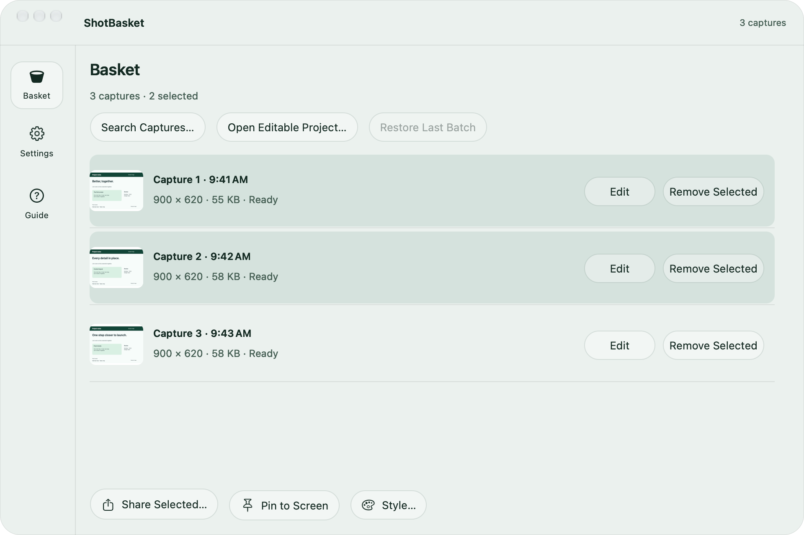
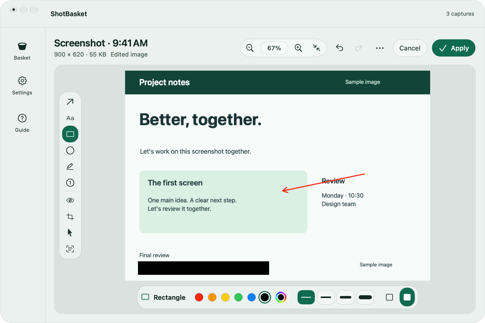
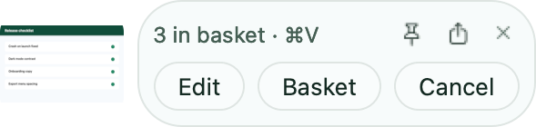

Shoot many. Paste once.
ShotBasket keeps every screenshot you take in a basket in your menu bar. One ⌘V drops them all into your message as separate files, in order.
The same five screenshots and the same chat. Every step plays at the same speed. The clipboard holds one image, so without ShotBasket each one needs its own trip to the chat.
Your clipboard holds one image.
Your message needs five.
Every new screenshot replaces the last one. So you capture, switch to the chat, paste, switch back, and do it all again. With ShotBasket you capture everything first and paste once.
Separate files
Every image arrives as its own attachment. Nothing is merged into a collage.
In your order
They land in the order you took them. Drag them around first if you like.
You press Send
ShotBasket pastes. It never presses Return and never sends anything for you.
The real app, not a mock-up.

Everything waits in the basket.
Captures stay in order until you paste them, even after a restart. Edit one, remove one, or share them all with AirDrop.

Mark it up before it goes.
Arrows, text, shapes, numbered steps, blur and crop. Editing makes a new PNG and keeps the original as it was.

A small card after every shot.
It shows how many are waiting. Drag the thumbnail into any app, or open the editor right there.
Need just one? Press ⌃⌘V.
A strip drops from the top of the screen with every capture numbered. Press a number to paste that one, drag one into any app, or drag sideways to change the order.
And the rest of the toolkit.
One look for all
The same background and frame on every capture.
Scrolling capture
A whole page as one tall image.
Screen recording
Record, trim, split, save as MP4.
Copy text and QR codes
Read the text in any capture, on your Mac.
Pin to screen
Keep a capture floating while you work.
Color picker
Any pixel on screen to a HEX code.
Self-timer
Take the shot a few seconds later.
AirDrop and Share
Send one capture or the whole basket.
Drag anywhere
Drop a capture into any app or browser.
See it in motion.
Turn the sound on. It’s short.
ShotBasket can’t go online.
Not “doesn’t”. Can’t.
Every Mac App Store app runs in a sandbox and must declare up front if it needs the network. ShotBasket declares nothing, so macOS blocks any connection it could try to make. Your screenshots stay in its folder on your Mac.
- No accountOpen it and start capturing.
- No analyticsNo ads, no telemetry, no tracking.
- No cloudNothing is ever uploaded.
The permissions macOS will ask for, and why
- Screen Recording
- To take screenshots and screen recordings. Newer macOS versions call it Screen & System Audio Recording.
- Accessibility
- For the capture shortcuts and for pasting the basket with ⌘V. On macOS 27 it is called Device Control and Data Access.
- Microphone (optional)
- Only if you want your voice in a screen recording.
Try it free. Pay once.
ShotBasket is free to download. Start the 7-day free trial to use everything, with no charge and nothing to cancel. Then unlock the full version once to keep it. No subscription, no account.
- Unlimited captures, one ⌘V for all of them
- Editor with arrows, text, blur and crop
- Scrolling capture and screen recording
- Copy text, QR codes, pins and a color picker
- macOS 13 or later, Apple silicon and Intel
- English and Turkish
Before you buy
Which apps can I paste into?
Any app or web page that accepts files when you paste: mail, chat apps, notes, issue trackers and most upload fields. Each app decides how it shows the files.
Does ⌘V change everywhere?
Only while screenshots are waiting in the basket. When the basket is empty, or when you pause ShotBasket from the menu bar, ⌘V is the normal Mac paste.
Does it send messages for me?
No. ShotBasket pastes the files into the field you clicked. It never presses Return and never sends anything.
Where are my screenshots stored?
In ShotBasket’s own folder on your Mac. A capture that leaves the basket is deleted after the delay you choose, never sooner than ten minutes. Turn on Save Screenshots to Folder to keep permanent copies.
Is there an iPhone or Windows version?
No. ShotBasket is made for the Mac.